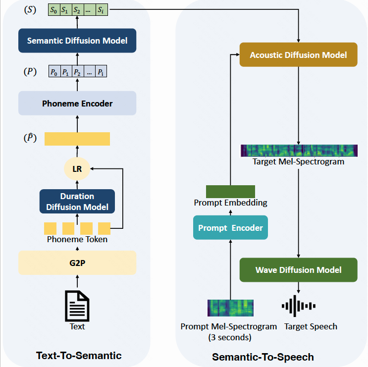
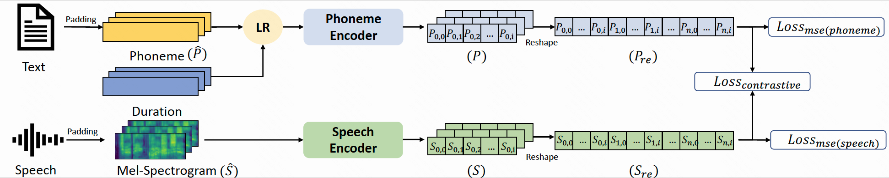

High-Fidelity Speech Synthesis with Minimal Supervision: All Using Diffusion Models
Model Architecture
|  |
CPSP Architecture
|  |
Use for TTS
Speaker 1
| Prompt | Synthesized Speech | |
|---|---|---|
Speaker 2
| Prompt | Synthesized Speech | |
|---|---|---|
Speaker 3
| Prompt | Synthesized Speech | |
|---|---|---|
Speaker 4
| Prompt | Synthesized Speech | |
|---|---|---|
Speaker 5
| Prompt | Synthesized Speech | |
|---|---|---|